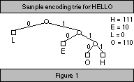
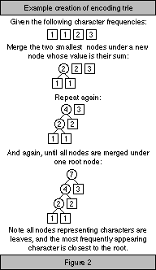

Data compression is a necessity nowadays, particularly with the advent of the Internet and its wealth of information (on beefalo1, for instance.) A variety of popular compression utilities are available for every computing platform, utilizing such diverse algorithms as Huffman, Lempel-Ziv, and a multitude of variants thereof. In this article we take a close look at an elementary algorithm called Run-Length Encoding in order to better understand some of the principles behind compression. We then examine a more complex algorithm called Huffman compression.
Compression has been used since computers were first applied to large-scale data manipulation tasks. It is important to bear in mind that the success of a compression algorithm is heavily dependent on the data being compressed; that is, one compression algorithm may compress a specific set of data extremely well, while the same algorithm applied to other data may either fail to reduce the data size at all, or perhaps even increase the data size.
We illustrate our compression algorithm discussion with live demonstrations written in Java. These demonstrations will more clearly show the process which takes place when data is compressed and decompressed, while also pointing out some of the strengths and weaknesses of the presented algorithms.
Run Long, Run Deep
Run-Length Encoding (RLE) is one of the simplest compression techniques. This algorithm simply analyzes the data to be compressed, looking for runs2 of repeated characters; it then stores these runs as a single character, preceded by a number representing the number of times this character is repeated in the run. Note that random data will not compress well; if there are no runs of repeated characters, this algorithm (implemented intelligently) cannot perform any compression at all. Implemented poorly, RLE will increase the data size (i.e., the string "ABAB" will become "1A1B1A1B", twice the length of the original!)
The RLE compression algorithm steps are:
Assume, for simplicity, that our input alphabet consists of only the characters 'A' and 'B'. We can then represent our data using a bitmap image. We choose to represent 'A' with black bits and B with blue bits. Since compressed data is stored using the (number, character) pair mentioned above, we also use the digits '0' through '9', displayed as yellow bits, to denote (only in compressed data) the run length of the character following the digit. Using this representation, we can demonstrate a very successful3 application of RLE compression. A somewhat successful4 compression job is more common, and if we are particularly unlucky we may be faced with some cases of incompressible data5.
RLE has the advantage of being simple to implement, but it is incapable of achieving high levels of compression for most data. Although some graphics images may compress well using RLE, most textual data does not contain long runs of repeated characters (unless one is compressing a cartoon script6, with frequent exclamations such as, "Aiyeeeeeeeeee.........".) We certainly wouldn't deign to forbid the application of RLE to such glamorous writings as these.
Mind Your Tries and Queues
Compression algorithms grow rapidly more complex. In order to achieve better data space savings, additional data structures and data analysis are often utilized. The Huffman compression algorithm, described by D. Huffman in 1952, achieves much better compression by taking into account the frequency with which characters appear in the input data. However, in order to do this, the algorithm must make use of a priority queue7 and an encoding trie8, while also analyzing the data in much more depth than is necessary in RLE compression.
The Huffman compression algorithm consists of the following steps:
Huffman compression thus achieves its data savings by enabling characters to be represented by a smaller sequence of bits.  In textual data, a normal character is commonly stored as 1 byte (8 bits), or 2 bytes (16 bits) for Unicode9 characters. We consider only 1-byte characters hereafter (and in our Huffman applet as well.) Using the encoding trie, the most frequently-appearing characters in the source data are located near the root of the trie, resulting in a shorter bit encoding. The most common characters may have an encoding of only one or two bits, versus 8 bits without compression.
The optimal placement of frequently-accessed characters in the encoding trie is due to the way in which step 3, above, is performed. Huffman discovered a way to create an encoding trie, based on particular input data, which results in a bit string of minimal length representing the input data. To build the optimal encoding trie: 
In order to decompress the data, we need to store the final character codes generated in step 4 of the main Huffman compression algorithm. Therefore, for input data which results in a large trie (and thus large bit-encodings), we must have a sufficiently large quantity of data to be compressed so as to make up for the size of the code storage space10. Since the space required by the codes is negligible when we have a large amount of relatively compressible input data, we disregard it in calculating the compression savings for our Huffman applets below. One should keep in mind, though, that for very small quantities of input data the encoding trie storage space may render Huffman compression ineffective.
If there are a number of redundant characters in the data to be compressed, Huffman can save quite a bit of space11. If all characters present in the string are equally represented12, our compression savings decrease, although we still save a great deal. In fact, most textual data will achieve compression of at least 40% to 50% with Huffman compression (yes, even text like "Aiyeeee."13) Unlike RLE, the level of compression is totally unrelated14 to the ordering of the characters in the data. Huffman compression is clearly superior to RLE compression for most textual data, but it is far more complex to implement and the actual compression/decompression process takes longer.
Other Data-Squishing Methodology
Although we've presented an amazing15 amount of information thus far, even compression has its limits. We therefore end our discussion with a brief look at related topics and future research possibilities for the interested reader.
The trie data structure is useful in many other areas, such as storing large quantities of information while allowing rapid lookup (i.e., computerized dictionaries, libraries, etc.) Both the PATRICIA tree16 and the Suffix tree address this problem and utilize the trie data structure.
Lempel-Ziv compression schemes (the two most common variants being LZ77 and LZ78) are the next logical step in our look at data compression algorithms. There are several pointers in this article to more information on Lempel-Ziv, and free source code is also available demonstrating one possible implementation.
Finally, USENET offerings for more information include the newsgroups alt.comp.compression, comp.compression, and comp.compression.research.
Stay compact. 
-- Walter <shaper@cerf.net> has been known to compress his peanut butter and jelly sandwiches before eating them.
Source code to the applets written for this article (in
order of appearance):
BaseApplet.java, RLE.java, Huffman.java